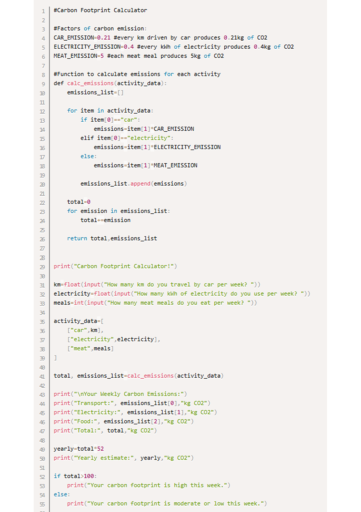

No Experience Needed
Start with variables, input, output, conditions, loops, and functions before moving into projects.
Intro to C++ workshop
Semicolon is a beginner-friendly coding workshop for students who want a calm, practical first step into programming. We cover C++ fundamentals, debugging habits, and small projects you can explain with confidence.

Start with variables, input, output, conditions, loops, and functions before moving into projects.
Every session includes live examples, guided exercises, and time to ask questions while you code.
Learn how to read errors, test ideas, and explain your solution clearly.
What we cover
Variables, data types, expressions, console input, and output.
If statements, loops, tracing code, and choosing the right structure.
Reusable code, parameters, return values, and breaking problems down.
Simple data storage, indexing, text processing, and common mistakes.
Reading compiler errors, checking assumptions, and fixing bugs calmly.
Small programs like calculators, quiz games, pattern makers, and simulations.
Workshop format
Interested?